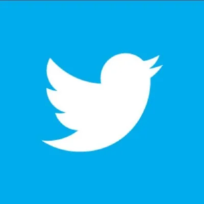

Sobre mim
Estudante de Bacharelado em Física pela Universidade de São Paulo. Meus principais interesses são Cosmologia e Astroparticulas, gosto de fazer divulgação científica em vários formatos: infográficos, threads, videos, entre outros. Aqui você pode encontrar um resumo sobre minha vida acadêmica.O Universo e as Questões Raciais
Seria muito bom viver em um mundo onde a ciência não fosse elitista e, principalmente, racista. Digo isso com convicção, pois o estudante de ciências comum é um homem branco de classe média. Quantas cientistas vemos atuando em astronomia? Agora, uma pergunta mais centralizada, quantas mulheres pretas que fazem alguma ciência exata você conhece? É impossivel ignorar esses problemas e continuar fazendo uma ciência que exclui mulheres e homens pretos. Por isso, neste site e em todos os meus meios de divulgação, eu vou tocar em questões raciais, pois mesmo que isso não seja relevante para você, a minha cor foi relevante para mim e dificultou minha chegada até aqui.
Pesquisas e Trabalhos Científicos
Aqui você encontra as pesquisas científicas e trabalhos realizados durante meu período de graduação.Astrominas
O Astrominas é um projeto de divulgação científica de ciências exatas criado pelo Instituto de Astronomia, Geofísica e Ciências Atmosféricas (IAG-USP) que tem como propósito levar conhecimento científico exclusivamente para meninas de 14 a 17 anos. Saiba mais.
Cecília
O projeto Cecília tem como objetivo levar conhecimento científico para escolas públicas de todo o Brasil. O projeto possui duas vertentes, #CecíliaEmCasa, de formato online, e o Cecília, que atua de forma presencial. Saiba mais.
Astropartículas
Iniciação científica na área de Astropartículas, com foco em Matéria Escura. Conduzida pelo Prof. Farinaldo Queiroz no Instituto Internacional de Física (IIP).
Discovering Stellar Systems in and around the Milky Way
Iniciação científica no período de janeiro a julho de 2022, Financiada pela Heising Simons Foundation, com foco em detecção e catalogação de galáxias satélites da Via Láctea, usando dados do The Dark Energy Survey (DES) e do Vera Rubin Telescope (LSST).
Clube do Jornal da Física
O Clube do Jornal da Física (CJF) é uma entidade acadêmica criada por Marcelo Marcelino de Carvalho com a minha ajuda e de outros colegas do Instituto de Física da USP. A finalidade é reunir alunos para apresentações quinzenais de papers acadêmicos de áreas relacionadas à Física Saiba mais.
Revista Supernova
A revista Supernova foi criada e é mantida pelo Centro Acadêmico do Instituto de Física (CEFISMA). Ela tem o objetivo de comunicar e informar o que acontece no baixo matão e em toda a USP. Ela reúne trabalhos, em diversas áreas, dos estudantes da região. Saiba mais.
Feed
Palestras, entrevistas e participações.{kind=link}
Astrominas na Band
Assista{kind=link}
Astrominas no Olhar Digital
Assista{kind=link}
Meteoro Brasil
Participação no canal com um vídeo sobre a diferença entre cometa, meteoro e meteorito. Assista{kind=link}
Astrominas no Estadão
Leia{kind=link}
Entrevista para Manas da Ciência
Leia{kind=link}
Entrevista Jornal do Campus
Leia{kind=link}
Entrevista Radio Agência Nacional
Leia{kind=link}
Palestra DPS
Palestra realizada para a entidade Dead Physicist's Society da Universidade de São Paulo, falando sobre minha pesquisa sobre detecção de estrelas com poucos metais.{kind=link}
Entrevista Jornal da USP
Entrevista sobre alunos na pandemia. LeiaContato
Você pode entrar em contato comigo para tirar dúvidas, marcar palestras ou reuniões através da sua rede social de preferência ou por email.- 
-

-